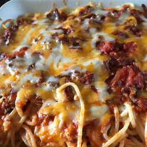

Baked Spaghetti
Description
Comforting baked spaghetti recipe with plenty of melted cheese — the
perfect dish for potlucks, family gatherings, or a weeknight dinner.

Ingredients
- 16oz of spaghetti
- 1lb ground beef
- 1 chopped onion
- 32oz of meatless spaghetti sauce
- 1/2 teaspoon of seasoned salt
- 2 eggs
- 1/3 cup of grated parmesan
- 5 tablespoons of melted butter
- 2 cups of small curd cotta cheese, divided
- 5 cups of shredded mozza cheese, divided
Steps
-
Preheat the oven to 175degrees C. Lightly grease a 9x13-inch baking dish
-
Bring a large pot of lightly salted water to a boil. Cook spaghetti in
boiling water, stirring occasionally, until tender but firm to the bite,
about 12 minutes. Drain.
-
Heat a large skillet over medium heat. Cook and stir beef and onion in
the hot skillet until meat is browned and onion is soft and translucent,
about 7 minutes. Drain excess oil from the pan. Stir in spaghetti sauce
and seasoned salt.
-
Whisk eggs, Parmesan, and butter in a large bowl. Add spaghetti and toss
to coat.
-
Place 1/2 of the spaghetti mixture in the prepared dish. Top with 1/2 of
the cottage cheese, 2 cups mozzarella, and 1/2 of meat sauce. Repeat
layers. Cover with aluminum foil.
-
Bake in the preheated oven for 40 minutes. Remove the foil and sprinkle
with remaining mozzarella. Continue to bake until cheese is melted and
lightly browned, 20 to 25 minutes.
- Enjoy!